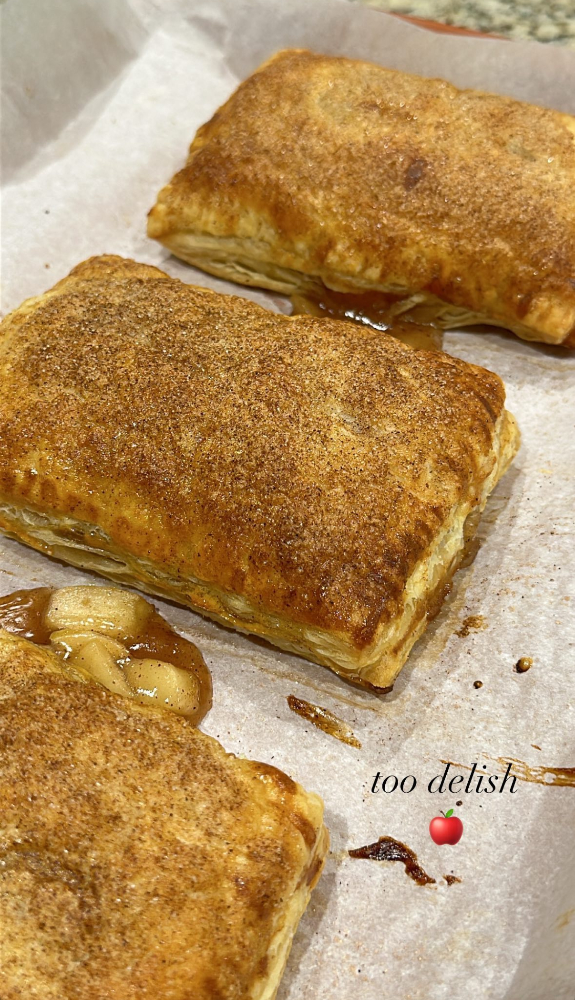

Ingredients
- 1 box of puff pastry
- 2 apples + lemon juice
- Cinnamon and nutmeg
- 3/4 cup of water
- 3 tablespons cornstarch
- 3 tablespoons brown sugar
- 3 tablespoons granulated sugar
Instructions
- Preheat oven to 350°F (185°C).
- On low heat pour water and cornstarch, and mix to thicken.
- Turn up to medium heat, pour in the sugars, and mix.
- Add in a dash of cinnamon and nutmeg.
- When caramelized, add in apples and leave on medium to low heat.
- Cut puff pastry into 12 squares and add filling to 6 squares.
- Close pastries, cut slits on top for ventilation.
- Brush tops with eggwash and bake for 20 minutes.
- Enjoy!